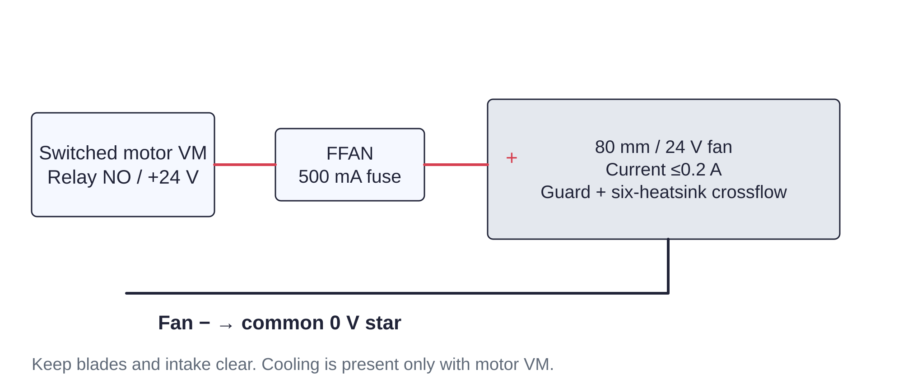

Controller / cooling127 / 179
Add guarded cross-flow cooling
One fixed 80 mm fan moves air across all six driver heatsinks during powered hold and motion. It runs from switched VM through its own fuse.
Add24 V / 80 mm fan, ≤0.2 A · guard · fixed mounting bolts · 500 mA branch fuse
Tools / setupBrick unplugged · polarity labels · fixed backplane

- Mount the guarded fan so its airflow crosses all six heatsinks without a blocked intake.
- Route switched VM → FFAN 500 mA → fan +; fan - lands at the 0 V star.
- Strain-relieve both wires away from blades and STEP/UART connections.
- Verify airflow when motor power is present; thermal commissioning uses this installed configuration.
Ready when
The fan starts with switched VM, clears every wire and moves air across the six driver heatsinks. An unguarded, stalled or obstructed fan fails the cooling setup. Remove motor power and correct the mount/route before a loaded thermal trial.